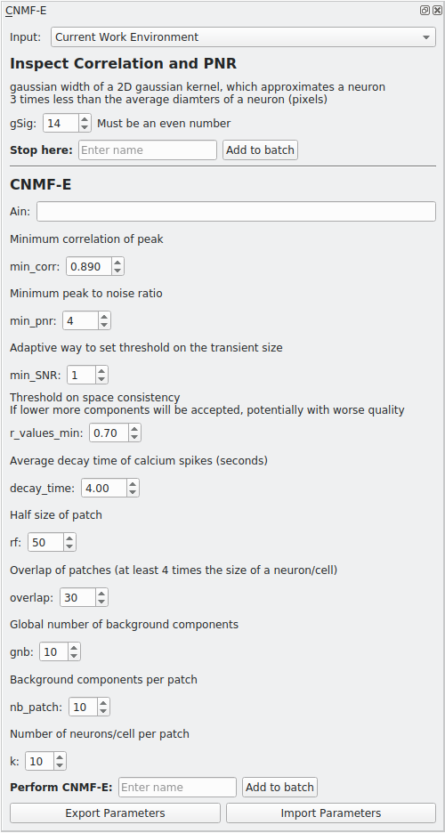

CNMFE¶
Perform CNMFE using the implementation provided by the CaImAn library.
I highly recommend going through the following before using this module

- CNMFE builds upon CNMF
- CaImAn CNMF-E demo notebook, the implementation in Mesmerize is basically from the demo
https://github.com/flatironinstitute/CaImAn/blob/master/demos/notebooks/demo_pipeline_cnmfE.ipynb
Parameters
Please see the CaImAn demo notebook mentioned above to understand the parameters.
Ain: Seed spatial components from another CNMFE item by entering its UUID here.
Usage¶
This module creates two types of batch items, one where you can inspect the Correlation & PNR images and another that performs CNMFE and extracts components. Here is an outline of typical usage:
- Enter a gSig parameter value and a name for “Inspect Correlation and PNR”, the text entry for “Stop here”. Click “Add to batch”. Run the batch item.
- Double-click the batch item, you will be presented with a GUI to help optimize min_corr and min_pnr. For the correlation image use the vmin slider to optimize the seperation of cells and set the min_corr parameter to this value. Likewise, optimize the value for the PNR until the PNR image mostly contains regions that show real signal and no or few regions that are likely to be just noise and set this vmin value as the min_pnr parameter. You may need to try slightly different variations to optimize the parameters.

- Enter the rest of the parameters and give a name under “Perform CNMF-E”, click “Add to batch” and run the item.
- Double-click the batch item and you will be presented with 3 options. The first option will display the correlation-pnr images and the second option is currently non-functional (matplotlib Qt issue). The last option will import the components extracted by CNMFE into an open Viewer. The components are managed by the ROI Manager.
See also
See also
This modules uses the Batch Manager.
Note
The parameters used for CNMFE are stored in the work environment of the viewer and this log is carried over and saved in Project Samples as well. To see the parameters that were used for CNMFE in the viewer, execute get_workEnv().history_trace in the viewer console and look for the ‘cnmfe’ entry.
Script Usage¶
A script can be used to add CNMFE batch items. This is much faster than using the GUI.
See also
Script Editor <module_ScriptEditor>.